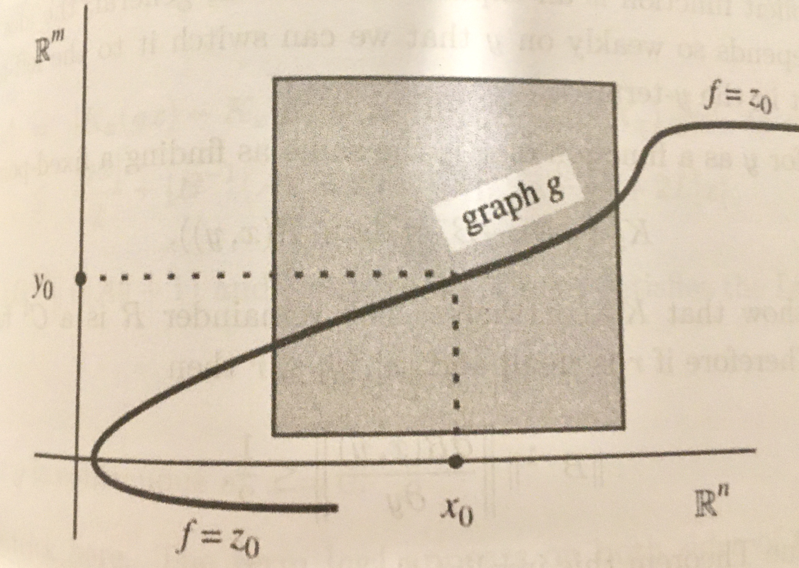

O objetivo principal deste curso é o estudo formal e rigoroso dos conceitos de diferenciabilidade e integrabilidade para funções de várias variáveis reais.

Pré-requisitos
Análise na reta, álgebra linear.
Professor
Nome: Silvius Klein
Sala: L749
Email: silviusk [arroba] puc-rio [ponto] br
Aulas
Hora: segundas e quartas das 11 às 13
Sala: L856
Horário de atendimento: depois de cada aula
Bibliografia
[Pugh] Charles C. Pugh, Real Mathematical Analysis, Springer, Undergraduate Texts in Mathematics
[Lima] Elon Lages Lima, Curso de Análise Vol.2, IMPA, Coleção Projeto Euclides
Avaliação
Listas de exercícios para entregar durante o semestre.
Dois exames escritos (um no meio do semestre e o outro no final). Datas: 10 de outubro e 7 de dezembro.
Cálculo da nota final: 30% exercícios, 35% cada exame.
Ementa do curso
- Noções de topologia
- Álgebra linear
- Derivadas como transformações lineares
- Derivadas de ordem superior, funções suaves
- Teorema da função implícita e da função inversa
- Forma local das submersões e imersões, teorema do posto
- Integração múltipla à Riemann (o conceito de integrabilidade)
- Integração iterada e a fórmula de mudança de variáveis
- Formas diferenciais
- A fórmula de Stokes, consequências
- O teorema do ponto fixo de Brouwer